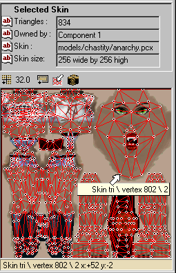
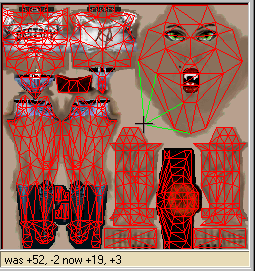
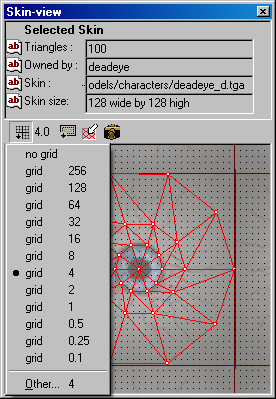
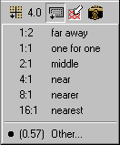
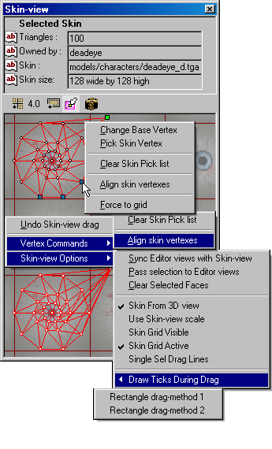
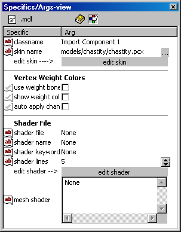

Skin-view page
Updated 03 Mar 2011
- QuArK Information Base
- 1. Introduction to QuArK
- 1.6. Model-editor in QuArK
|
|
Skin-view page
Updated 03 Mar 2011
|
Upper levels: - QuArK Information Base - 1. Introduction to QuArK - 1.6. Model-editor in QuArK |
|
1.6.10. Skin-view page |
[ - - ] |
QuArK's Model Skin-view page is quite different then its Map Editor's Face-view page. This is where all of the 'skinning' (texturing) functions of the model take place and therefore requires its own section for explanation and reference during the model editing process. This section is also linked to that pages buttons and RMB menu items for quick access. Unfortunately, like the Map Editor's Face-view page, one unfavorable characteristics it has at this time is that when the page is pulled out of its normal position in the Model Editor the help hint and F1 Infobase links will no longer work until it is returned. |
|
Index |
|
Overview |
cdunde - 15 Sep 2007 | [ Top ] |
 As stated earlier, this section actually shows the mesh, skin, drag handles and RMB menus when called upon. It is also the editing work area for skinning the model. Something that you will notice here is how the skin texture is repeated over and over again with red color outlines. This is called Tiling and goes on indefinitely. Most other model editors do not show the skin texture in this manner, yet it still exist and is usable. We chose to show it in its true fashion to assist you in various aspects. Some models have been skinned by over-laying parts or half of the skin mesh over the top of the other, to conserve texture file size and\or match the texturing exactly. This method is beneficial at times but it can also be awkward as well. By displaying the tiled areas, you can easily relocate any part of the skin mesh you choose to another tile section rapidly and with great accuracy in QuArK's Model Editor.  This is possible because of the way we have constructed the Skin-view to operate. Notice in the two screen shots to the right how the help box of the model editor displays not only the triangle (tri) and vertex-index number of the handle the cursor is about to grab for dragging, but it also gives you the exact location of its position on the base tile of that texture by its x: +52 y: -2 amounts. As you drag that handle to another tile section of that texture those same co-ordnances will be displayed in real time along with their original position as a reminder. So you simply drag to that same location on another tile section. In addition, this feature works in the same manner weather you are doing a multi-drag or a single drag by using the Vertex drag mode (covered below). Which brings us to another group of functions and modes selection buttons to assist you in your work with vertexes and their relocation. The RMB Skin-view menus are covered in the Functions & RMB Menus section further down. |
|
Selection & Navigation Methods |
cdunde - 29 Oct 2007 | [ Top ] |
|
Selection Methods : Two different selection methods have been designed into the QuArK Model Editor for the Skin-view page. Also see the Model Editor's Overview page Selection & Navigation Methods for the editor's particular methods. LMB Vertex Handle Drag : This method is available when your cursor is directly over a model components Skin mesh vertex (point) drag handle and the cursor will change in appearance when it is. Holding down your LMB will allow you to drag that particular vertex to a new location in the view, changing the appearance of the model for that particular component. A specific animation frame does not need to be selected for this function to work. LMB Rectangle Selector : This method is available when the cursor is not over a vertex. Holding down your LMB and moving your mouse will produce a Red Rectangle selector that you can drag across the Skin-view. This selector will allow you to make a multiple selection of a model components Skin mesh vertex points at one time. These vertexes can then be passed on to the Editor views or will be done so automatically if you have activated one of the options on the Skin-view RMB menu (which you can obtain by clicking your RMB in the Skin-view) or the main Options menu for Skin-view Options. As the Model Editor is developed, this selection method will be used to move and edit whole sections of the model's Skin mesh by use of its selected vertexes. To de-select any and all vertexes, simply do another small Rectangle drag in any unused area of the Skin-view. LMB & RMB Selector : (not activated at this time, reserved for future use and functions.)   Skin-view's button section Skin-view Grid button : (far left button) Because the Model Editor and the Skin-view work on different aspects of a model, they require their own distinct and independent Grids, which is the first button to the far left. Each have their own grid menu with pre-set amounts, but any amount can be entered by clicking on the Other item shown at the very bottom of the menu. In addition, for the Skin-view, there are two RMB menu items for the Skin-view grid (see below). Skin-view Zoom button : (2nd button) This allows you to zoom in and out from the skin with some pre-set factors as well as a setting for a 'custom' zoom amount. It only applies to the Skin-view and not to any other view of the Model Editor. Vertex drag mode : (3rd button) This is a special feature of the Skin-view. It allows you to choose to make either a multiple drag (the default setting) using a single drag handle, meaning all other handles in the same location will be dragged also automatically keeping the skin mesh together, or a single drag only dragging the handle on top which will pull the skin mesh apart for individual placement. This button also works in conjunction with the RMB menus that we will cover further on. Remap Snapshot button : (far right button) Pressing this icon, will reset the selected component's skin mesh using the angle of view that is seen in the editor's 3D view when the button is clicked. Doing it this way allows you to re-map any selected faces, of any component, at any angle or direction for complete control of that process. So if you originally skin from the side and the top faces are distorted, you can select those faces, rotate the editor's 3D view to look from the top and click this button to re-skin them. There is also an option on the Skin-view RMB menu, shown below, to turn off the 3D view and re-skin from the Skin-view 2D perspective instead. If the outcome does not go as planed, just use the RMB menu or editor's undo function to reverse the action. A couple of other issues about all of the selection methods described at the beginning: 1) Once a selection is made the Skin-view RMB menu, 'Vertex Commands' will become active for its items use. 2) How and what a selection will select is also linked to the Vertex drag mode button above the actual viewing area. Meaning, either single depth or full depth selection of the vertexes can be made depending on the mode that button is set to at the time. Once a selection has been made, the Vertex drag mode can be changed to work with your selection in various different ways. A little experimentation will assist you in learning these differences. Navigation Methods : The Skin-view navigates much like it does in the rest of the Model Editor, 2D views and is covered in detail below. Skin-view viewing area : Using your MMB you can Zoom in and out for the 2D viewing area. Press and holding your RMB will allow you to Scroll or Pan in that same view. All other combinations are used as described above in the Selection Methods section. |
|
Functions & RMB Menus |
cdunde - 05 Dec 2007 | [ Top ] |
|
 Picking up from where we left off from above, these are the RMB menus available in the Skin-view that can assist you in multi and single vertex movement and realignment. All of these functions work in conjunction with the Vertex drag mode button which is shown set to the Single drag mode in the screen shot to the right. Basically, these functions all center around snapping one or more Picked vertexes, shown here as blue handles, to a Base location, shown to the right as lime green. These colors are changeable by selection from the Model Editors Colors Configuration section. The Base Vertex uses the same color setting as the Selected brushes, side view and the Skin Vertexes use the same color as the 3D views drag lines setting. The procedure is simple, first select a Base Vertex by placing your cursor over the one you wish to choose, then RMB click and select Pick Base Vertex (not shown here but it's at the top off the menu where it displays Change Base Vertex now). Second, do the same for each skin vertex choosing the Pick Skin Vertex menu item each time. Finally, when you are ready to make your snap either place your cursor over any of the selected skin vertexes or anywhere in the Skin-view, RMB click and select Align skin vertexes. The snap will take place and the final results will look something like the second image of the eye at the bottom of the screen shot. Now a couple of special situations in using these menu functions. If you are only going to snap one Skin Vertex to the Base Vertex then all you need to do is select that Base Vertex and the Align skin vertexes menu items following the steps above. You do not need to use the Pick Skin Vertex menu item. In addition, the Base Vertex will remain selected for you, so you can simply RMB click over another skin vertex to move it to the same position or you can place your cursor over any unselected vertex and choose the Change Base Vertex menu item and it will jump to that new location and you can carry on from there. Using these along with the Vertex drag mode button a number of various combinations of aligning vertexes can be accomplished. And as stated in the section above, the exact co-ordnances ,of all of these items, will be displayed in the editor's, lower left corner, Help box as you proceed through the phases of your editing. Clear Skin Pick list : This will do just that, clear all of the picked vertexes including the Base vertex and start fresh. Force to grid : When the Skin Grid is Active (see menu item below) in the Skin-view this allows you to snap a vertex, or group of vertexes, to the closest grid point position. These grid points can be changed by using the grid settings covered above. Vertex Commands - submenu items : Clear Skin Pick list : Described above. Align skin vertexes : Also described above. Skin-view Options - submenu items : (also located on the
Options menu) Sync Editor views with Skin-view : This function will turn off other related options and synchronize selected Skin-view mesh vertexes, passing and selecting the coordinated Model mesh vertexes in the Editors views, where they can be used for editing purposes. Any selection changes in the Skin-view will be updated to the Editors views as well. Once the selection has been passed, if this function is turned off, the selection will remain in both the Editor and the Skin-view for further use. The Skin-view and Editor views selected vertex colors can be changed in the Colors Options settings. Pass selection to Editor views : This function will pass selected Skin-view mesh vertexes and select the coordinated Model mesh vertexes in the Editors views, along with any others currently selected, where they can be used for editing purposes. Once the selection has been passed, if this function is turned off, the selection will remain in the Editor for its use there. The Skin-view selected vertex colors can be changed in the Colors Options settings. Clear Selected Faces : This function will clear all faces in the Skin-view that have been drawn as 'Selected' or 'Show' but any related selected vertexes will remain that way for editing purposes. The 'Skin-view' selected face, show face and selected vertex colors can be changed in the 'Configuration Model Colors' section. Skin From 3D view : This turns the function on or off to take co-ordnances for the 'Skin-view' from the editors 3D view when new objects are created using the 'Quick Object Maker'. It will place that object on the skin exactly the same way you see it in the 3D view when the object is created. This same process applies to selected faces in the editor. Because the 3D view uses its own 'scale' factor, activating this function will also turn off the Use Skin-view scale function. Use Skin-view scale : This turns the function on or off for applying of the views 'zoom' or 'scale' factor when taking co-ordnances from the 'Skin-view' and which works in reverse. Meaning, when this option is checked, if the Skin-view is zoomed out (skin looks small) it will skin new triangles with fewer repetitions (skin looks larger) of that image and visa-versa. Because the 3D view uses its own 'scale' factor, activating this function will also turn off the Skin From 3D view function. Skin Grid Visible : (Also located in the Model Editor Configuration Options section) This function gives quick access to turn the Skin-view Grid on and off, but it will still be active for functions that use it such as the snap to function. Skin Grid Active : (Also located in the Model Editor Configuration Options section) This function also gives quick access to activate or deactivate the Skin-view Grid. But any functions that use it such as the snap to function will not be effective. Single Sel Drag Lines : This function stops the multiple selection drag lines of the 'Linear Handle' from being drawn in the Skin-view to speed up the Skin-view selection and handle creation. And Two more additional RMB items are located on the Draw Ticks During Drag sub-menu. These are: Draw Ticks During Drag: - submenu items : These functions give various methods for drawing the Models
Skin Mesh Vertex Ticks while doing a rectangle drag. Rectangle drag-method 1 : This function will draw the Skin-view mesh vertex 'Ticks' during a rectangle drag with a minimum amount of flickering, but is a slower drawing method. Rectangle drag-method 2 : This function will draw the Skin-view mesh vertex 'Ticks', using the fastest method, during a rectangle drag, but will cause the greatest amount of flickering. |
|
Importing Skin Textures |
cdunde - 03 Mar 2011 | [ Top ] |
|

Basically there are two ways to import a skin texture: 2) By using a component's Skins Specifics / Arg page (detailed steps below). By selecting a component's Skins folder, or a skin within that folder, you will activate the Specifics page for it. One that Specifics page click on the icon button that shows three dots on it next to where it says either import skin or skin name, depending on if you selected the Skins folder or a skin in the tree-view. Clicking that button will bring up a File Selection window that you can use to locate and select the skin texture image file you wish to import. Selecting the file will cause it to be imported. This method supports most of the texture file formats that are available in QuArK. However, some, such as .pcx, files use a color pallet for their images and need to be imported through one of the Texture Browser methods above to get processed properly. |
|
Copyright (c) 2009, GNU General Public License by The QuArK (Quake Army Knife) Community - http://quark.sourceforge.net/ |
[ - Top - ] |